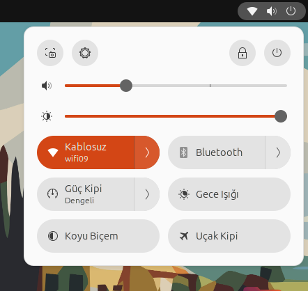

Gnomedan sıkılanlar için Popüler masaüstü ortamı olan KDE'nin Ubuntuya nasıl yükleneceğine dair bir rehber! 🥳
Bu komutu kullanarak sistemi güncelleyin(neden güncellemeniz gerektiğini anlatmıyorum bile):
sudo apt update -y && sudo apt upgrade -y
Şimdi 3 tane seçenek var altına açıklamalarını yazdım zaten:
sudo apt install kde-plasma-desktop
Sadece KDE'yi indirmek için yanında hiç bir uygulaması yok sadece Masaüstü ortamı
sudo apt install kde-standard
Bu normal temel uygulamalar falan var tavsiye edilenide bu zaten
sudo apt install kde-full
Bu KDE nin 7 ceddini indirmek isteyenler için ben bunu indirceğim
Kurulum sırasında, “sddm'yi yapılandırma” başlıklı bir ekranla karşılaşacaksınız. KDE Plasma, Basit Masaüstü Ekran Yöneticisi (SDDM) ile en iyi şekilde çalışmak üzere tasarlanmıştır. Yapılandırmaya devam etmek için, seçeneği vurgulamak için TAB tuşuna basın
Her şey bittikten sonra görseldeki adımları uygulayın:
Oturumu kapatın işte resim koydum
Ve sonrasında parola girme ekranında Plasmayı seçin